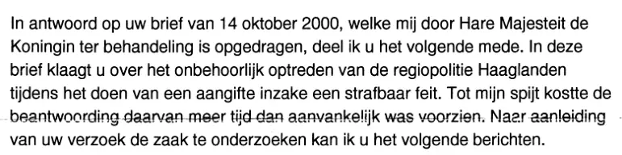

Beweisstück · Brief
Innenministerium an Giltay, 11. Januar 2001
Die Passage
„In Beantwortung Ihres Schreibens vom 14. Oktober 2000, welches mir von Ihrer Majestät der Königin zur Bearbeitung übertragen worden ist, teile ich Ihnen Folgendes mit. In diesem Schreiben beschweren Sie sich über das unangemessene Vorgehen der Regionalpolizei Haaglanden bei der Erstattung einer Anzeige betreffend eine Straftat.“ Seite 1, die ersten beiden Sätze des ersten Absatzes des Briefes. Aus dem Niederländischen übersetzt; der Originaltext steht unten.
Originaltext
“In antwoord op uw brief van 14 oktober 2000, welke mij door Hare Majesteit de Koningin ter behandeling is opgedragen, deel ik u het volgende mede. In deze brief klaagt u over het onbehoorlijk optreden van de regiopolitie Haaglanden tijdens het doen van een aangifte inzake een strafbaar feit.”

Warum dieses Dokument wichtig ist
In diesem Brief vom 11. Januar 2001 antwortet der Innenminister auf Giltays Brief vom 14. Oktober 2000, der ihm „von Ihrer Majestät der Königin zur Bearbeitung übertragen worden ist“. Der Essay legt dar, dass Königin Beatrix auf Giltays Bitte eingriff, als seine Anzeige, die zum Teil mit Srebrenica zusammenhing, liegen blieb. Der Leiter der Polizeibehörde (korpsbeheerder), W.J. Deetman, hatte am 14. Dezember 2000 Giltays Widerspruch gegen die Erledigung seiner Beschwerde über polizeiliches Vorgehen in einem Punkt für begründet erklärt. Auch das findet sich in diesem Brief wieder: Das Ministerium merkt an, dass Giltay inzwischen eine Antwort des Leiters der Polizeibehörde Haaglanden auf seine Beschwerde erhalten habe, und verweist ihn darauf.
Herkunft
- Dokument
- Brief (Abschlussschreiben)
- Absender
- Ministerium für Inneres und Königreichsbeziehungen, Direktion Polizei, im Namen des Ministers unterzeichnet von der Leiterin der Direktion Polizei, L.M.C. Ongering
- Empfänger
- E.F. Giltay
- Datum
- 11. Januar 2001
- Geschäftszeichen
- EA2000/95374
- Betreff
- Uw klacht over politieoptreden (Ihre Beschwerde über polizeiliches Vorgehen)
- Bezüge
- Giltays Brief vom 14. Oktober 2000, von Ihrer Majestät der Königin zur Bearbeitung weitergeleitet; seine Beschwerde vom 24. April 2000 bei der Regionalpolizei Haaglanden
- Anlage
- 1 (ein Faltblatt des Nationalen Ombudsmanns)
- Sprache
- Niederländisch
- Seiten
- 1 in diesem PDF; das Blatt selbst ist mit 1 von 2 nummeriert
- Siehe auch
- Kabinett der Königin an Giltay, 31. Oktober 2000W.J. Deetman, Leiter der Polizeibehörde Haaglanden, an Giltay, 14. Dezember 2000
Zitiert in: dem Essay „Das Verbot fiel, das Buch hielt stand“ im Kapitel (3) „Was das Buch enthüllt: die Srebrenica-Vertuschung“.
Beweiskarte: https://
Dokument: https://
Zuletzt geändert am 13. September 2026, abgerufen am 3. Oktober 2026.

Diese Seite ist ein Beweisstück zum Buch Der Cover-up-General von Edwin Giltay und zur dazugehörigen Website.